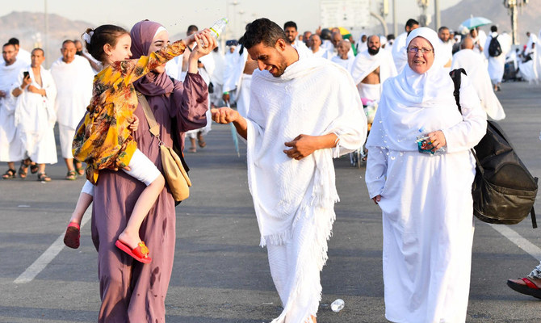
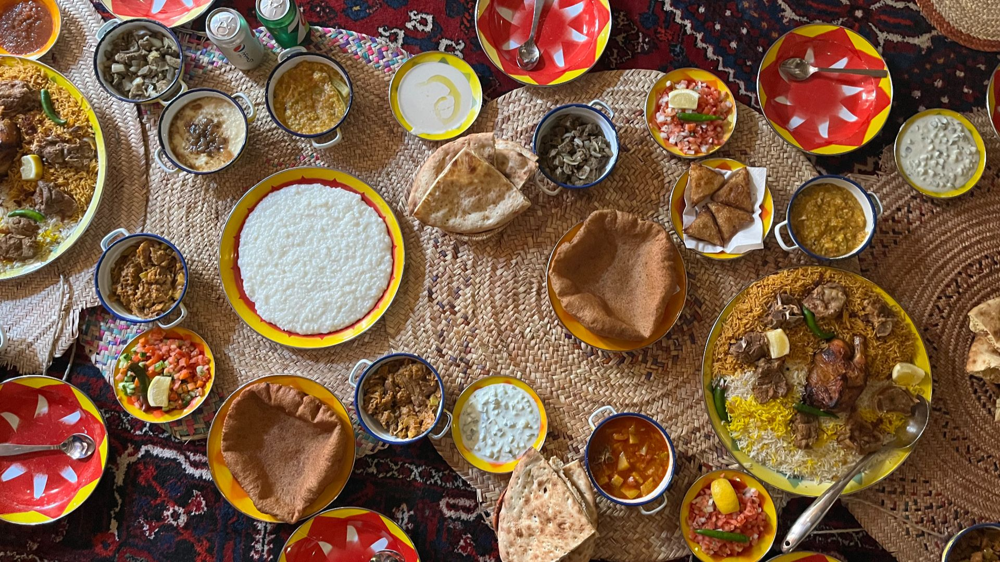
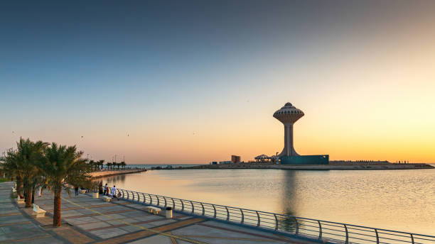

Traditions
Saudi Arabia is a nation with a rich cultural heritage rooted in centuries of history, tradition, and Islamic values. Arabic, the country's official language, has a strong literary legacy, with renowned poets and writers contributing to a vibrant tradition of storytelling and poetry.
Saudi art and architecture reflect a blend of traditional and modern influences, showcased in iconic landmarks such as the Kaaba, Masjid al-Haram, and historic forts, as well as artistic forms like calligraphy and mosaics.
Music and dance are important aspects of cultural life, with traditional performances such as the Ardha and Mizmar existing alongside contemporary music.
Traditional clothing, including the thobe for men and the abaya and hijab for women, remains an important symbol of cultural identity while modern fashion continues to evolve. Islam is at the heart of Saudi society, shaping its laws, customs, and daily life.
The country is home to the two holiest cities in Islam, Makkah and Madinah, and welcomes millions of pilgrims each year for Hajj and Umrah.
Values such as family, charity, community support, and hospitality are deeply embedded in Saudi culture, while religious occasions such as Ramadan, Eid al-Fitr, and Eid al-Adha bring people together in celebration and reflection. Together, these traditions create a strong sense of unity, identity, and pride within Saudi society.


